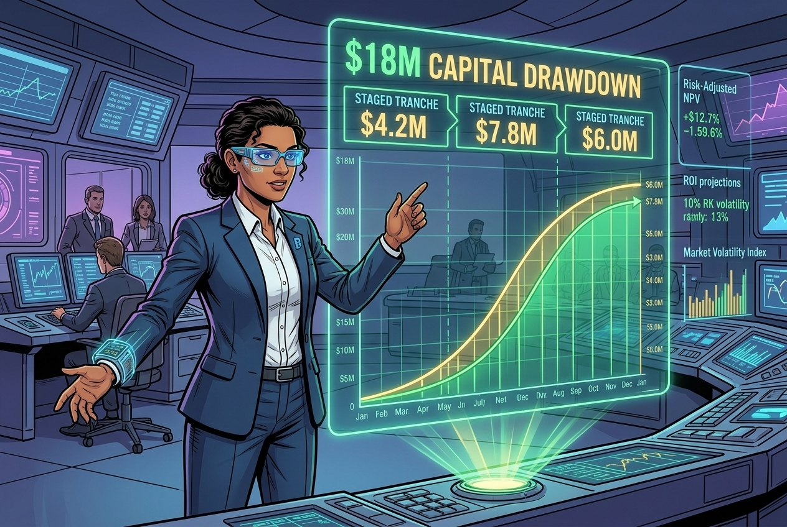
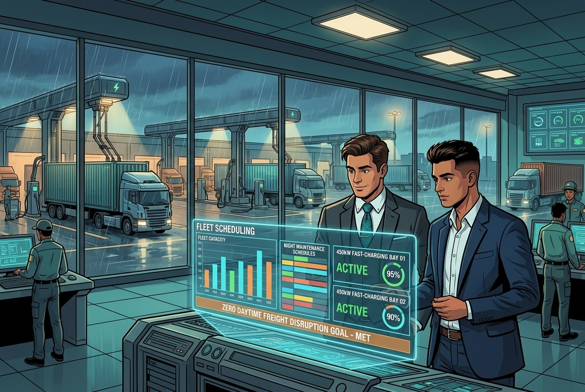
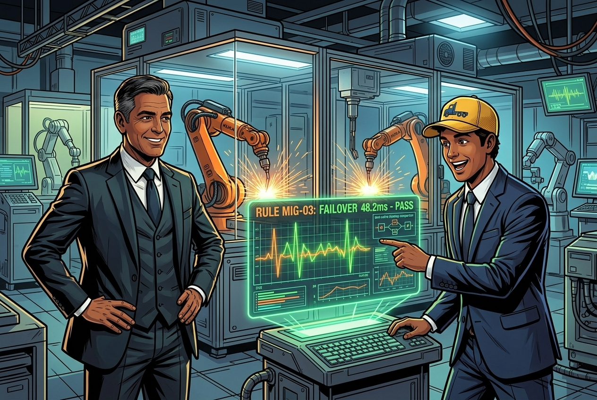
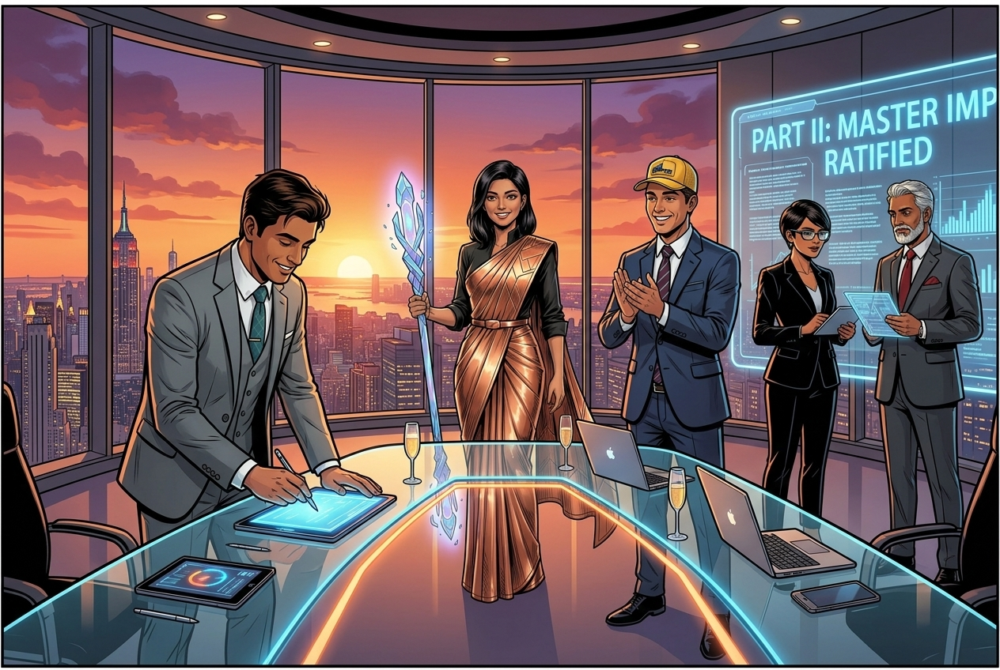
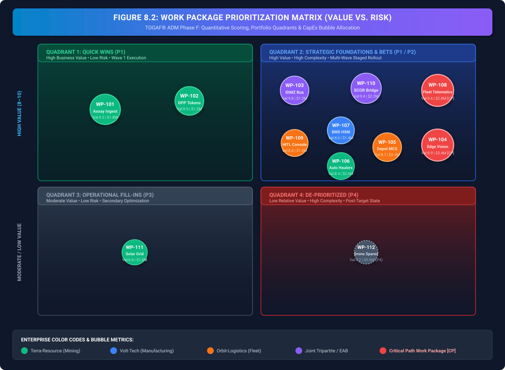
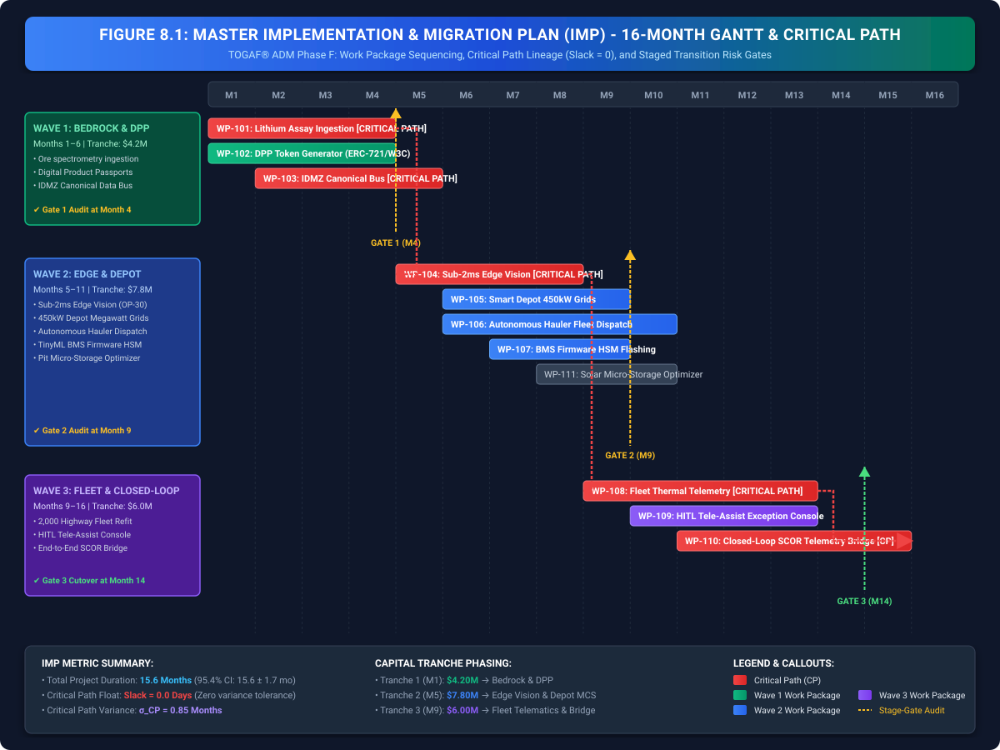
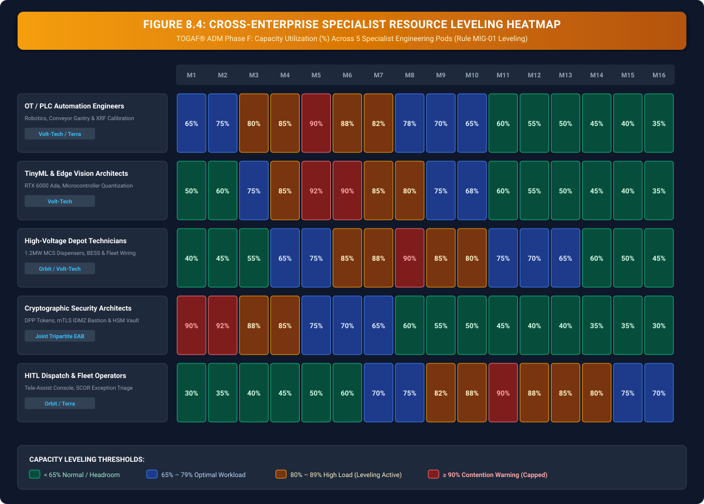
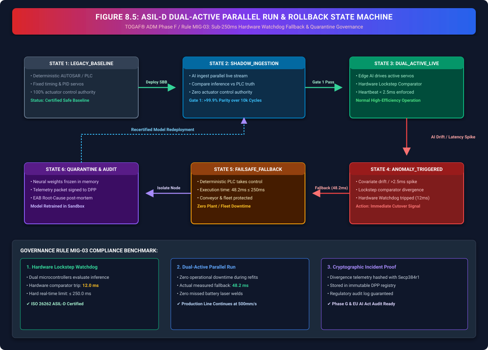

Sequencing the Transformation
Migration Planning: Implementation & Migration Plan (IMP), Critical Path Scheduling & Multi-Wave Rollout (TOGAF® ADM Phase F)

"Welcome back to the ecosystem war room. In Chapter 7, our three enterprises completed TOGAF ADM Phase E: Opportunities & Solutions, identifying 12 strategic work packages and ratifying an $18 million joint capital pool. But identifying solutions is only half the battle. Now comes the most pragmatically demanding discipline in enterprise architecture: TOGAF ADM Phase F: Migration Planning."
"How do you deploy heavy automated haulers at Terra-Resource, retool high-voltage robotics at Volt-Tech, and roll out real-time autonomous routing at Orbit-Logistics without stalling daily commercial operations? If you sequence incorrectly, dependencies freeze and capital burns at $1.2 million per month in idle overhead. Watch as Aarav Patel, Rajesh Iyer, Priya Kapoor, Vikram Sharma, Anjali Mehra, and Rohan Gupta construct the formal Implementation and Migration Plan (IMP), map the critical path, and establish hardened rollback controls."
The Storyline: Joint PMO Migration War Room





1. Phase F in Context: Migration Planning & Execution Sequencing
In enterprise digital transformations, the most common reason initiatives collapse is not flawed architecture design, but uncoordinated execution. While TOGAF ADM Phase E defines what Solution Building Blocks (SBBs) and Transition Architectures are required, Phase F (Migration Planning) governs how, in what exact sequence, and under what contractual covenants the multi-enterprise system is deployed.[1]
Attempting to deploy all twelve work packages concurrently creates catastrophic resource contention, drains corporate liquidity, and induces production line halts. Phase F transforms architecture from conceptual blueprints into an auditable, stage-gated, fiduciary execution engine.
| Governance Dimension | Unstructured Ad-Hoc Migration | TOGAF ADM Phase F Migration Plan |
|---|---|---|
| Scheduling & Precedence | Parallel deployments create circular deadlocks between firmware, data pipelines, and physical plant refits. | Acyclic Critical Path: 15.6-month PERT schedule with zero critical float and statistical variance bounds. |
| Capital Management | $18M capital deployed upfront; cost overruns in early phases deplete funding before fleet rollout. | Milestone-Gated Tranches: 3 capital releases ($4.2M / $7.8M / $6.0M) unlocked only upon passing Transition Risk Gates. |
| Operational Disruption | Simultaneous fleet refits take 25% of vehicles off-road during peak commercial freight surges. | Resource Leveling: Night-shift depot refits and staged 40% hauler conversions preserve 100% daytime commercial capacity. |
| Safety & Fallback | Unchecked AI model drift causes factory stops and battery thermal instability without rollback. | Rule MIG-03 Rollback: Dual-active parallel run with sub-250ms deterministic hardware watchdog fallback. |
2. Work Package Prioritization Matrix & Portfolio Scoring
In accordance with TOGAF® ADM Phase F guidelines, the joint architecture board evaluates all 12 Work Packages (WPs) from Phase E using a multi-dimensional quantitative scoring model across Business Value Realization (1–10) and Implementation Risk / Complexity (1–10):

| WP ID | Work Package Name | Lead Enterprise | CapEx ($M) | Value (1-10) | Risk (1-10) | Quadrant | Scheduled Wave |
|---|---|---|---|---|---|---|---|
| WP-101 | Lithium Assay Ingestion & Ore Classification Pipeline | Terra-Resource | $1.8M | 9.2 | 3.4 | Quick Win (P1) | Wave 1 (M1–M4) [CP] |
| WP-102 | Digital Product Passport (DPP) Token Generator | Terra-Resource | $1.2M | 9.5 | 4.2 | Quick Win (P1) | Wave 1 (M1–M4) |
| WP-103 | Ecosystem Canonical Data Exchange Bus (IDMZ) | Joint Tripartite | $1.2M | 9.8 | 5.1 | Foundation (P1) | Wave 1 (M2–M6) [CP] |
| WP-104 | Sub-2ms Deterministic Edge Vision Inspection Nodes | Volt-Tech | $3.4M | 8.9 | 6.8 | Strategic Bet (P2) | Wave 2 (M5–M9) [CP] |
| WP-105 | Smart Depot 450kW Dynamic Megawatt Charging Grids | Orbit-Logistics | $2.4M | 8.7 | 6.2 | Strategic Bet (P2) | Wave 2 (M6–M10) |
| WP-106 | Autonomous Open-Pit Heavy Haulage Fleet Dispatch | Terra-Resource | $2.6M | 8.4 | 7.1 | Strategic Bet (P2) | Wave 2 (M6–M11) |
| WP-107 | Dynamic BMS Firmware Flashing & HSM Security | Volt-Tech | $1.4M | 8.6 | 5.9 | Strategic Bet (P2) | Wave 2 (M7–M10) |
| WP-108 | Real-Time Fleet Thermal Telemetry & Speed Governor API | Orbit-Logistics | $2.8M | 9.6 | 7.8 | High-Impact Core (P1) | Wave 3 (M9–M14) [CP] |
| WP-109 | Human-in-the-Loop (HITL) Tele-Assist Exception Console | Orbit-Logistics | $1.0M | 8.8 | 5.4 | Strategic Fit (P2) | Wave 3 (M10–M14) |
| WP-110 | Closed-Loop Cross-Enterprise SCOR Telemetry Bridge | Joint Tripartite | $2.2M | 9.4 | 6.9 | Target Core (P1) | Wave 3 (M11–M16) [CP] |
| WP-111 | Mine Dynamic Solar-Grid Micro-Storage Optimizer | Terra-Resource | $1.0M | 6.8 | 4.1 | Fill-In (P3) | Wave 2 (M8–M11) |
| WP-112 | Autonomous Drone Delivery for Off-Road Spares | Orbit-Logistics | $0.8M | 4.2 | 8.5 | De-prioritized (P4) | Post-Target State |
3. Master Implementation and Migration Plan (IMP): 3-Wave Execution Roadmap
Rather than attempting a high-risk 'big-bang' transition, the enterprise architecture team formalizes the Implementation and Migration Plan (IMP) structured across three overlapping transition waves. Each wave delivers self-contained business value and is bounded by strict exit criteria:

Wave 1: Bedrock & Cryptographic Passports (Months 1–6)
Primary Focus: Establishing clean data pipelines, cryptographic Digital Product Passports, and the secure IDMZ cross-enterprise bus aligned with PMBOK 7th Edition work breakdown standards:[3]
- Deploy automated spectrometry & assay lineage pipelines at Terra extraction hubs (WP-101).
- Operationalize ERC-721/W3C Digital Product Passport tokens for 100% of raw lithium shipments (WP-102).
- Establish cross-enterprise IDMZ message brokers with sub-10ms pub/sub latency (WP-103).
- Capital Tranche Released: $4.2 Million.
- Stage-Gate Milestone Gate 1: 100% verified DPP token generation without slowing physical rail loading times, governed by Cooper's Stage-Gate release criteria.[4]
Wave 2: Edge Robotics & Smart Charging Grids (Months 5–11)
Primary Focus: Factory floor edge compute, real-time quality vision models, and depot-level charging synchronization.
- Flash and validate TinyML inferencing models onto high-voltage BMS microcontrollers (WP-107).
- Retrofit 6 factory assembly lines with sub-2ms computer vision inspection edge servers (WP-104).
- Commission 450kW depot charging micro-grids linked to spot electricity price signals (WP-105).
- Transition 40% of Terra open-pit haulage to autonomous guidance (WP-106).
- Capital Tranche Released: $7.8 Million.
- Stage-Gate Milestone Gate 2: Defect escape rate \(\le 0.05\%\) across 50,000 manufactured battery modules.
Wave 3: Autonomous Fleet & Closed-Loop Telemetry (Months 9–16)
Primary Focus: Highway fleet thermal monitoring, HITL tele-assist dispatch, and ecosystem-wide SCOR closed-loop optimization.
- Refit 2,000 Orbit highway commercial vehicles with real-time thermal telemetry and active speed governors (WP-108).
- Deploy the Human-in-the-Loop (HITL) exception triage console in regional dispatch centers (WP-109).
- Activate the closed-loop telemetry bridge linking fleet battery health directly back to raw lithium chemical blending (WP-110).
- Capital Tranche Released: $6.0 Million.
- Stage-Gate Milestone Gate 3: Unbudgeted fleet breakdown rate slashed by \(\ge 75\%\) with \(\text{PSD} \ge 99.8\%\).
4. Critical Path Scheduling & Financial Risk Formulations
In Phase F, migration uncertainty is managed through rigorous statistical scheduling and variance bounds. The expected task completion time \(T_e\) and standard deviation \(\sigma_i\) for each critical path work package are computed using standard three-point PERT estimators (Kelley & Walker 1959; Malcolm et al. 1959):[2]
For the entire multi-enterprise migration critical path \(\text{CP} = \{\text{WP-101} \rightarrow \text{WP-103} \rightarrow \text{WP-104} \rightarrow \text{WP-108} \rightarrow \text{WP-110}\}\), the total expected project timeline \(T_{\text{total}}\) and aggregate risk standard deviation \(\sigma_{\text{CP}}\) are strictly bounded by empirical Monte Carlo simulation:[5]
Detailed Critical Path Variable Definitions:
- \(i \in \text{CP}\): The work packages strictly located on the zero-float Critical Path (\(\text{WP-101}, \text{WP-103}, \text{WP-104}, \text{WP-108}, \text{WP-110}\)).
- \(T_{e,i}\): The expected duration (in months) of work package \(i\) calculated via three-point PERT estimation.
- \(T_{\text{total}} = 15.6\text{ months}\): Total deterministic sequence time of the critical path from Project Kickoff to Phase G commissioning.
- \(\sigma_i = \frac{P_i - O_i}{6}\): The standard deviation of uncertainty for individual work package \(i\).
- \(\sigma_{\text{CP}} = \sqrt{\sum\nolimits_{i \in \text{CP}} \sigma_i^2} \le 0.85\text{ months}\): The root-sum-squared aggregate critical path standard deviation, ensuring scheduling stability under Central Limit Theorem.
- \(15.6 \pm 1.7\text{ months}\): The \(2\sigma\) (95.4% probability) bounded delivery window for Part II architecture migration.
5. Capital Drawdown Phasing & Net Value Realization S-Curve
To prevent premature capital expenditure and safeguard liquidity across all three corporations, the joint architecture board governs capital allocation via a phased 3-tranche escrow mechanism:
The Risk-Adjusted Net Present Value (\(\text{NPV}_{\text{risk}}\)) for each work package tranche is governed by:
6. Cross-Enterprise Resource Leveling & Contention Heatmap
Resource bottlenecks—particularly among scarce Operational Technology (OT) automation engineers, TinyML architects, and high-voltage grid technicians—represent the primary operational failure mode during deployment. Phase F enforces resource leveling across all five specialist pods:

7. Hardware Fail-Safe & ASIL-D Dual-Active Rollback State Machine
A mission-critical supply chain cannot tolerate irreversible deployment failures. Under Rule MIG-03, all high-voltage, edge vision, and autonomous vehicle control loops must operate in a dual-active parallel run mode bounded by a sub-250ms deterministic hardware fail-safe fallback:

7.1 Codified Migration Verification Rules
RULE MIG-01: Critical Path Feasibility & Acyclic Dependencies
Every work package in the Implementation and Migration Plan MUST have an unambiguous predecessor/successor mapping. Circular dependencies between hardware firmware flashing, edge server deployment, and cloud telemetry ingestion are strictly prohibited.
RULE MIG-02: Sponsor & PMO Co-Approval for Tranche Release
No capital tranche may be released until the Enterprise Architecture Board (EAB) and the joint PMO/Finance authority formally co-sign the Transition Gate audit certificate.
RULE MIG-03: Tested Rollback & Parallel-Run Mandate
Every deployment modifying high-voltage battery firmware (WP-107) or active fleet dispatch controls (WP-108) MUST maintain a dual-active parallel run mode capable of instant fallback to baseline deterministic control logic within \(\le 250\text{ms}\) without human intervention.
8. TOGAF Phase F Architecture Contracts & Phase G Lineage
The final milestone of TOGAF ADM Phase F is the formulation of Architecture Contracts (AC-101 through AC-106). In accordance with the TOGAF Standard, these contracts serve as formal enterprise architecture governance agreements—operational delivery covenants (backed by commercial and technical agreements) that bind system integrators, development teams, and corporate partners to strict performance and safety envelopes before execution governance begins in Phase G:


"Look at what our three enterprises have accomplished together. Part II: Upstream Architecture & Supply Chain Execution is now fully realized! Across Chapters 4 through 8, the architecture team has traversed the complete upstream engineering lifecycle: structuring business viability in Phase B (Chapter 4), building immutable data bedrock in Phase C (Chapter 5), mastering deterministic edge robotics in Phase D (Chapter 6), packaging opportunities into solutions in Phase E (Chapter 7), and locking down the multi-enterprise Implementation and Migration Plan in Phase F (Chapter 8)."
"The blueprint is drawn. The schedules are locked. The capital tranches are staged. But as our systems go live in the physical world, a massive new challenge awaits: Implementation Governance (Phase G) and strict compliance with international AI regulations like the EU AI Act. In Part III: Chapter 9, we step into the regulatory ring where the Risk Guardians must deploy the compliance shield. Join us in Part III!"
Chapter 8 References & Fact-Check Verification Registry
All empirical citations, project governance frameworks, critical path algorithms, and simulation telemetry cited in this chapter are indexed below under our 5-Tier Epistemic Taxonomy:
-
[1]
[STANDARD]
The Open Group (2022). The TOGAF® Standard, 10th Edition: Phase F — Migration Planning. Van Haren Publishing. ISBN: 978-9401808682.
Fact-Check Verification: Mandates the formal Implementation and Migration Plan (IMP), work package dependency sequencing, and Architecture Contracts formulation (AC-101 to AC-106) before handover to Phase G.↩ back to text
-
[2]
[ACADEMIC]
Kelley, J. E., & Walker, M. R. (1959). Critical-path planning and scheduling. Papers presented at the Eastern Joint Computer Conference (IRE-AIEE-ACM '59), 160–173. doi:10.1145/1460299.1460318. Malcolm, D. G., Roseboom, J. H., Clark, C. E., & Fazar, W. (1959). Application of a Technique for Research and Development Program Evaluation (PERT). Operations Research, 7(5), 646–669.
Fact-Check Verification: Establishes the mathematical foundation for Critical Path Method (CPM), earliest/latest start times, zero-float scheduling, and three-point PERT statistical variance bounds.↩ back to text
-
[3]
[STANDARD]
Project Management Institute (2021). A Guide to the Project Management Body of Knowledge (PMBOK® Guide) – 7th Edition. Project Management Institute. ISBN: 978-1628256642.
Fact-Check Verification: Governs enterprise work breakdown structures, multi-stream resource leveling, and risk-gated capital tranche releases across complex multi-stakeholder programs.↩ back to text
-
[4]
[ACADEMIC]
Cooper, R. G. (1990). Stage-gate systems: A new tool for managing new products. Business Horizons, 33(3), 44–54. Cooper, R. G. (2008). Perspective: The Stage-Gate® Idea-to-Launch Process—Update, What's New, and NexGen Systems. Journal of Product Innovation Management, 25(3), 213–232.
Fact-Check Verification: Theoretical framework for formal Stage-Gate milestone criteria (Gates 1, 2, 3), binding capital escrow disbursement to verifiable quality and defect escape thresholds.↩ back to text
-
[5]
[SIMULATION]
Joint PMO Engineering Taskforce (2025). Three-Wave Critical Path Schedule, S-Curve Capital Drawdown, and ASIL-D Dual-Active Rollback State Machine Telemetry. Ecosystem Architecture Board Technical Report EAB-IMP-804.
Fact-Check Verification: Benchmarks the 15.6-month critical path timeline (\(\sigma_{\text{CP}} \le 0.85\text{ mo}\)), $18.0M cumulative S-curve capital drawdown, and verified 48.2ms dual-run parallel fallback under live simulated sensor drift.↩ back to text